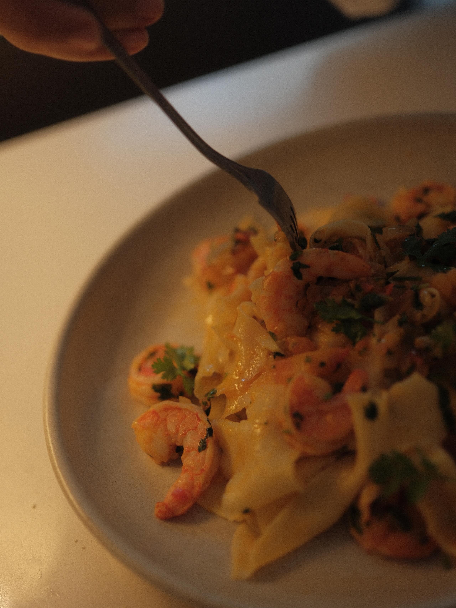
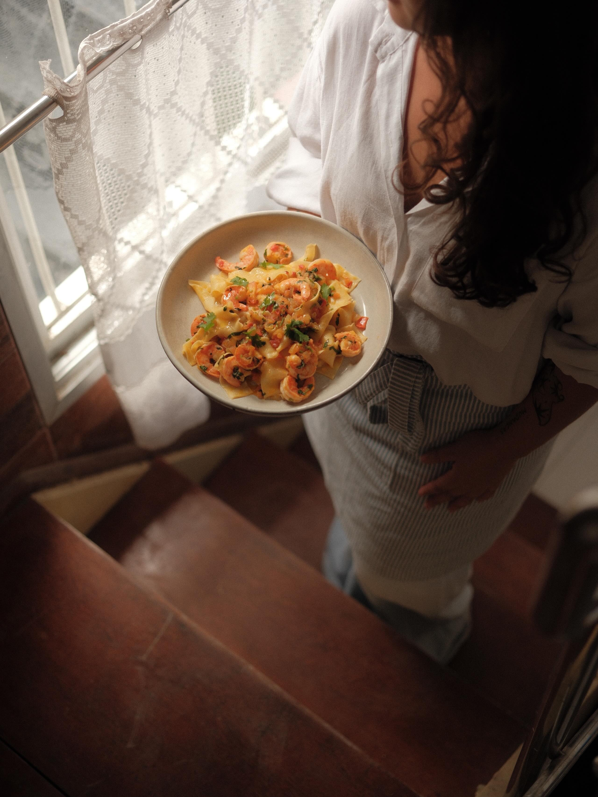
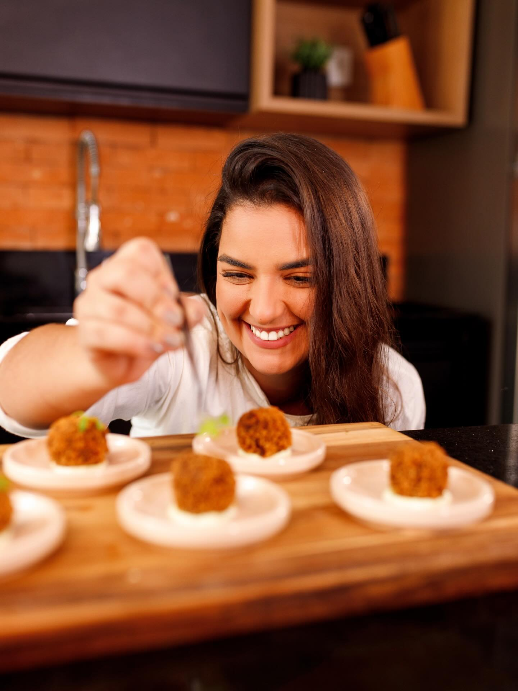
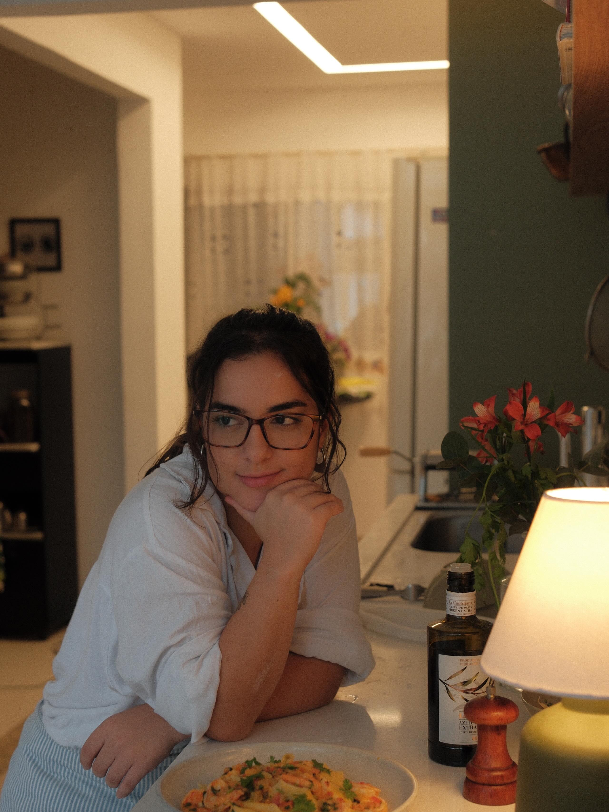
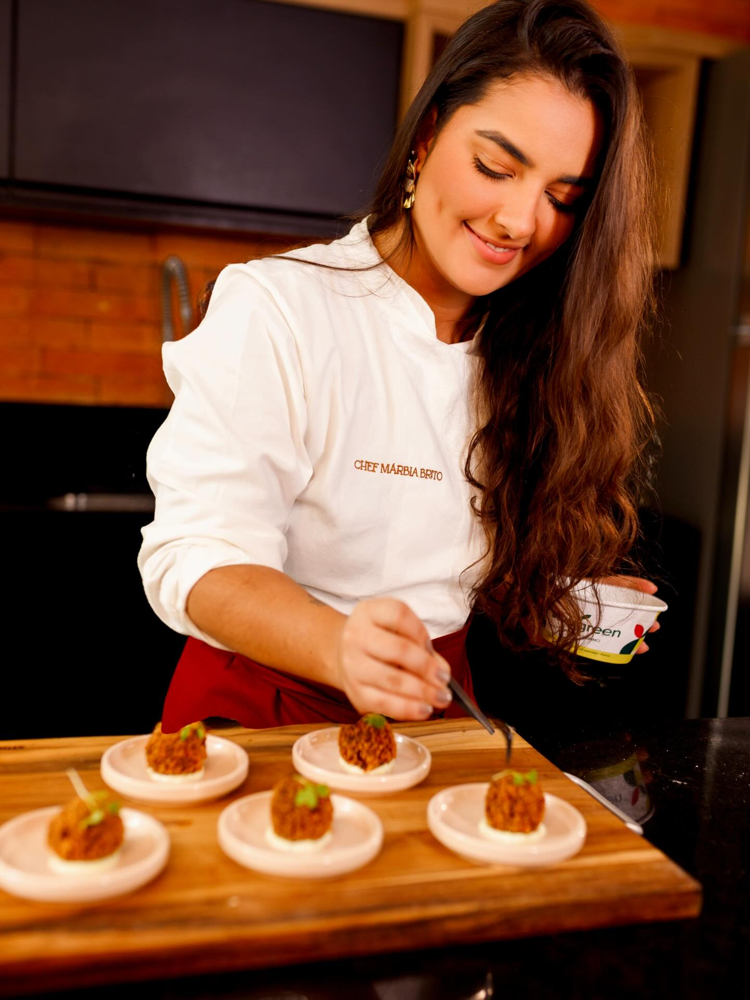

Prato Principal
Sabores intensos e empratamento impecável.
Cardápios personalizados criados exclusivamente para o seu paladar. Leve a alta gastronomia para o conforto da sua casa no dia a dia, com ingredientes selecionados e muito carinho em cada preparo. Ideal para quem busca saúde, sabor e praticidade.

De jantares intimistas a mini weddings e confraternizações. Transformamos o seu evento em uma experiência inesquecível, cuidando de todos os detalhes gastronômicos para você focar no que realmente importa: aproveitar o momento com seus convidados.

Um pouco do que preparamos para tornar cada momento especial. Comemos primeiro com os olhos!

Sabores intensos e empratamento impecável.

Preparos que abrem o apetite e encantam.

Estrutura completa para jantares privativos.
O cuidado absoluto em cada detalhe da experiência.
O que faz da nossa gastronomia a escolha certa para você.
Seleção rigorosa de insumos para garantir o máximo de sabor e qualidade em cada receita.
Cardápios montados sob medida, respeitando suas preferências e restrições alimentares.
Nós cuidamos das compras, do preparo e da finalização, para você ser o melhor anfitrião.
Entre em contato diretamente pelo WhatsApp. Me conte a data, o estilo do evento e número de convidados, e montaremos uma proposta exclusiva.